Mathematical Derivation Used to Initialize Arrays with Sinusoidal Waveforms
Scott Chesnut, Verigy
Paper ID: 109710 January 2009
Introduction
Since the early 1970s, digital signal processing has become common place. Yet digital creation of waveforms is not often described. What follows is a description of the mathematical process one uses to create single tones, multi-tones, complex multi-tones and IF signals.
Single Tone Creation
In general, a sinusoidal varying quantity can be expressed as
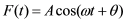
(Equation 1)Where:
F(t) = Instantaneous value of the cosine function
A = Amplitude or maximum value
ω = Frequency in radians per second
t = Time in seconds
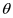
= Phase angle in radians (theta)Since an angle of 2
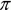
radians corresponds to one complete cycle, a tone frequency in cycles per second or hertz (Hz) can be described as: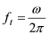
(Equation 2)This can be rearranged as follows:
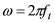
(Equation 3)By substituting Equation 3 into equation 1 we get:
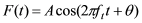
Because computers cannot emulate continuous time, the variable t will be renamed:
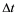
thus also making the function F a discrete time function. So now the equation becomes: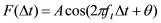
(Equation 4)We would like to digitally synthesize
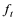
. Again, computers cannot emulate continuous frequency, so we will have to mathematically represent in terms that are computer friendly. To do so, assume that the waveform to be created is to be coherent.If so, it can be described by the following equation:
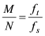
(Equation 5, Coherent Sampling Equation)Where:
M = Number cycles in a waveform; an integer
N = Number of samples used to describe that waveform; an integer.
= The frequency of the tone to be produced; a real number.
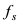
= The sample rate; the rate (frequency) at which the waveform samples are sourced or sampled; a real number.Solving for
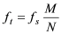
(Equation 6)Substituting this into equation 4:
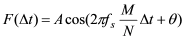
(Equation 7)This function which will generate a discrete value
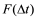
, for every discrete unit of time (deltaT).We can initialize an array with a set of these discrete values if this
equation is put into a C++ for loop - as is done
below:
DOUBLE TimeOffset, deltaT ;
ARRAY_DOUBLE F; //Declare an array of double floating point values.
for (deltaT= 0; deltaT < One Waveform Period; deltaT + TimeOffset)
{
<equation7> //Fill array with the function values for each deltaT.
}Loop control maintenance of the above routine becomes messy, though. The routine has the following problems:
- If the coherent waveform has more that one waveform period, the loop control
(
for) statement breaks down. - If the
TimeOffsetvariable is not integrally related to theOne Waveform Periodvariable, coherency of the waveform is lost.
The solution to problem number one is to replace the variable One Waveform
Period with another called Unit Test Period (UTP) or some form of it.
Doing so allows us to describe waveforms of any number of cycles. The equation for UTP is given
as:
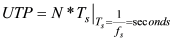
(Equation 8)The UTP is the amount of time required to collect N samples of a waveform. That is, N times the period
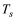
is the number of seconds required to collect a waveform. With this in mind, we can use the concept of the UTP to help provide a solution to problem number two.The best way to solve problem number two is to replace with a quantity which is related to the total number of samples to be sourced or measured, or better yet, to the UTP. Doing so will also help represent equation components in computer friendly terms.
By substituting
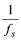
for in equation 8 above it becomes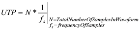
So one unit of time, , can be described as:
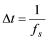
Two units of time become:
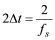
and so on. If we replace the numerator of this equation with an integer variable, sayi, then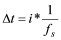
. By doing so we have produced a solution to problem number two and ourfor loop becomes: (we have set to zero for simplicity).The following code uses
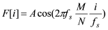
as F1, deltaT1,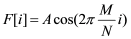
as F2.int i;
ARRAY_DOUBLE F; //Declare an array of double floating point values.
for (i= 0; i < N; i++)
{
F1; //Fill array with the function values for each deltaT1
}This equation can be simplified because the terms in the numerator and denominator cancel out. It then becomes:
int i;
ARRAY_DOUBLE F; //Declare an array of double floating point values.
for (i= 0; i < N; i++)
{
F2; //Fill array with the function values for each deltaT1
}The
resulting array will contain N elements of a sine wave which describes a
waveform containing M cycles. Preservation of coherent waveform representation
has been accomplished.
Multi Tone Creation
Now that the process of initializing an array with the discrete values of a single tone has been described, extending these concepts to development of multi-tone waveform generation will be visited.
In general, a multi-tone sinusoidally varying quantity can be expressed as the sum of multiple separate tones.
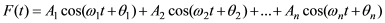
By the mathematical process we used to derive the single tone discrete time function, the discrete time function for an n toned waveform becomes:
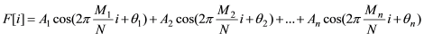
Where:
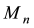
= Number cycles in a waveform n; an integer.Keep in mind that the number of cycles of each tone must fit integrally into coherent sampling equation and satisfy equation 9 below:
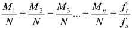
(Equation 9, Multi-tone Coherent Sampling Equation)N = Number of samples used to describe the total UTP of all tones in waveform; an integer.
Note that this number is the same for all tones.
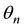
= The absolute phase of the tone (relative to zero radians).This quantity may be used to change the phases of the individual tones relative to another. To convert degrees to radians multiply the desired phase offset by
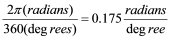
.With
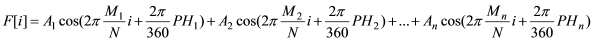
as F1, the C++ routine to initialize an array with the values of this multi-tone would become:int i;
ARRAY_DOUBLE F; //Declare an array of double floating point values.
DOUBLE PH;
for (i= 0; i < N; i++)
{
<F1>
}Complex Multi Tone Creation
Now that the process of initializing an array with the discrete values of a multi tone has been described, extending these concepts to development of multi-tone complex waveform generation will be visited.
In General, a multi-tone sinusoidally varying complex quantity can be expressed as the real and imagined components of the sum of multiple separate tones.
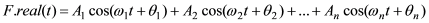
And
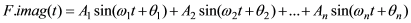
Where:
F.real(t) = The real portion of the complex waveform.
F.imag(t) = The imaginary portion of the complex waveform.
Condering:
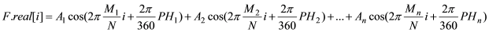
as F1 and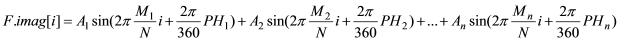
as F2, the C++ routine to initialize an array with the values of this multi-tone would become:int i;
ARRAY_COMPLEX F; //Declare an array of complex double floating point values.
for (i= 0; i < N; i++)
{
<F1>
<F2>
}Up Converted Complex Multi Tone Creation
Now that the process of
initializing an array with complex multitones has been described, extending these concepts to
development of an IF complex waveform generation will be
visited.
IF signals are useful when encoding/decoding data which is to
be sent or received using a single ADC (or DAC) - as is the case when information is sent via
radio waves to/from an antenna.
Below is a description of how an IF
signal could be created and received in hardware (ADCs, mixers, DACs, Local Oscillators). We
will want to replicate this process in software and write the IF waveform to an
array.
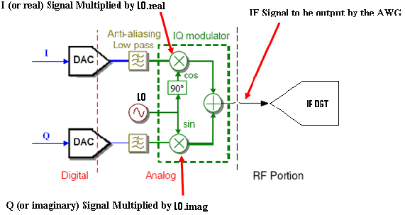
The IF waveform referenced above can be created within a C++ algorithm.
An LO (local oscillator) waveform will be of a very high frequency whose cycle count; Mlo will be very large.
We create an IF signal by multiplying the complex multi-tone by the LO tone in the following approximate manner:
- Transmitted IF Waveform = LO*(Multi-Tone)
In reality the multi-tone's real and imaginary components are multiplied by the real and imaginary components of the LO to obtain the IF (real) waveform as follows:
- IF_Waveform[i]=Tone1.real[i]*LO.real[i]-Tone1.imag[i]*LO.imag[i]
or
- IF_Waveform[i]=Tone1.real[i]*LO.real[i]+Tone1.imag[i]*LO.imag[i]
Considering:
as F1
as F2
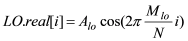
as F3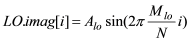
as F4 and recalling the C++ routine to initialize an array with the values of this multi-tone from the previous section, we have:int i;
ARRAY_COMPLEX F; //Declare the multi-tone array.
ARRAY_COMPLEX LO; //Declare the local oscillator array.
ARRAY_COMPLEX IF; //Declare the intermediate frequency array.
Double maxval(0);
for (i= 0; i < N; i++)
{
<F1>
<F2>
<F3>
<F4>
IF[i]=F.real[i]*LO.real[i]-F.imag[i]*LO.imag[i]
//find the max value of the IF array so that it can be used later to keep from
//clipping the waveform as it comes out of an AWG.
if (fabs(IF[i]) > maxval) maxval = fabs(if[i]);
}
//Scale the real waveform to keep from clipping the waveform as it comes out of the AWG
for (i= 0; i < N; i++)
{
IF[i]=IF[i]/maxval;
}The resulting IF waveform is not complex and can be sent or received from a single DAC or ADC just as it could be sent out a single antenna.